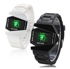
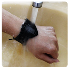

Инструкция на русском языке. Скидка 50%!!!
Старая цена - 4780 руб.!Цена - 2390 руб.
ЗаказатьCуществуют часы с пятью или с двумя вариантами подсветки.Но у наших часов их целых семь! Плюс режим смены цветов дополнительно!
На дисплее отображаются время, месяц, число, год.Ремешок: черный или белый на выбор
Оригинальные часы имеют водонепроницамемый корпус из нержавеющей стали. Остерегайтесь подделок с пластмассовым покрытием!
Уникальные по дизайну наручные светодиодных часы c будильником "Fire Stealth" сделаны по модели стратегического американского бомбардировщика B-3 "STEALTH" BOMBERS, в народе именуемого "СТЕЛС".Необычайно яркие и оригинальные, словно прибывшие на нашу планету из другой галактики, эти часы не только выделят вас из толпы, но и позволят заявить всем окружающим о вашем чувстве стиля. Этот неповторимый гаджет эффектно смотрится и с деловой, и со спортивной, и с повседневной одеждой.
Качество нашего товара не вызывает сомнений! Чтобы подтвердить это мы даем гарантию - 2 года!
Перед отправкой мы проверяем каждые часы на работоспособность и наличие внешних дефектов.
В комплект входит инструкция на русском языке! Внимание! Завод производителя не поставляет инструкцию на нашем родном языке, и мы перевели инструкцию специально для вас.
Мы не требуем с вас предоплаты!!! Вы можете оплатить товар при получении в вашем отделении Почтовой связи
Стильный дизайн часов с дисплеем в форме истребителя подчеркнет вашу яркую индивидуальность
Часы имеют функцию будильника и секундомера
Часы водонепроницаемые (защита от брызг и дождя)
Часы имеют 7 цветов светодиодной подсветки
Время на часах отображается при ажатии кнопки, что позволяет экономить заряд батареи
Благодаря мягкому регулируемому силиконовому мешку часы удобно сидят на руке
Минималистический дизайн, качественное исполнение.
Лучший подарок настоящему мужчине - мужские часы!
48 мм х 40 х 10 мм
нержавеющая сталь
черный или белый
24,6 см
2,7 см
силикон
черный или белый
пряжка
включение подсветки, отображение времени;
вход в режим установки параметров
отображение даты и настройка парметров установки
отображение времени будильника и сохранение установленных параметров
Для того чтобы посмотреть время нажмите верхнюю кнопку слева
Для отображения даты нужно нажать верхнюю кнопку справа
Для отображения времени, установленного на будильнике, нажмите нижнюю кнопку справа
Для того, чтобы поменять цвет подсветки нажмите верхнюю кнопку слева и удерживайте ее
Для установки времени нажмите левую кнопку и удерживайте ее до того момента, пока не начнут мигать параметры, которые нужно изменить. Затем при помощи правой верхней кнопки выставите необходимое время. Для завершения установки нажмите нижнюю кнопку справа. Чтобы выйти из режима установки нужно нажать кнопку слева. Аналогичныи образом установите минуты
Для настройки секундомера нажмите кнопку слева. После того как светодиоды загорятся при помощи правой верхней кнопки активируйте режим секундомера. Для начала отсчета нажмите верхнюю кнопку справа. Чтобы обнулить результат нажмите нижнюю кнопку справа.
Для проверки индикации светодиодов нажмите кнопку слева. Для актививации режима будильника нажмите верхнюю кнопку справа. Настройте время будильника при помощи нижней правой кнопки.
Если вы заметили, что светодиоды стали светить не так ярко как обычно, значит следует заменить батарею. Это можно сделать самостоятельно, открыв при помощи острого предмета заднюю крышку корпуса. Средний срок службы батереи составляет до 1 года при условии включения показа времени не чаще 15 раз в день. Питание часов осуществляется от батарейки CR2032 в комплекте. Однако батарея, поставляемая в комплекте с часами может иметь меньший срок службы вследствие того, что при производстве часы неоднократно проверяются на работоспособность.
ЗаказатьЧасы меня зацепили сразу как только я их увидел, очень понравился дизайн. У меня всю жизнь были часы с круглым корпусом, а тут что то новенькое чего я прежде не видел и сам концепт аэродинамической формы и самолетной тематики поглотил меня и перенес в детство. В общем заказал часы, на следующий день кто то позвонил и сказал, что посылка скоро будет. Получил посылку через 8 дней, одел их прям на почте и щеголял в них весь день по городу. Часы приковывают внимание, я вам скажу, ловил на себе множество восторженных, а порой и завистливых взглядов! Короче это не часы - это мечта, они того стоят!!!
Доброго времени суток. Отзыв о часах. Я очень люблю путешествовать, бывать в разных интересных местах. Наверное, поэтому я люблю, что бы меня окружали не обычные и функциональные вещи. После того, как приобрел эти часы, не вижу им достойной альтернативы. Больше всего нравится, что в них есть время, календарь и будильник. Думаю, что эти часы прослужат мне еще очень долго и побывают со мной во многих уголках мира. Кстати за них мне в Турции, один подвыпивший мужик предлагал 1000 зелени. Спасибо за сервис!
Долго искала яркий и в то же время нужный подарок на день рожденье своему любимому молодому человеку. Он у меня стильный, следит за собой, любит хорошо одеваться. Увидела эти часы и решила, что это то что нужно. Быстро оформила заказ, нисколько не сомневаясь в правильности выбора. Через определенное время получила посылку, быстрая доставка порадовала. Часы Роману очень понравились. Мне кажется, это стильная деталь стала завершающим штрихом его образа. Часы при носке очень удобны. Подарок теперь служит своему хозяину и постоянно находится с ним, напоминая о моей любви.
Так как я не очень доверяю интернету, то я долго думал о том, заказать или нет. Но потом решил для себя, если платишь уже на почте, то обмануть тебя никак не могут! Решился, заказал. Через примерно неделю привезли мне часы на почту :) Теперь ношу, очень рад, прикольная вещь!
ЗаказатьМы вам доверяем и не требуем с вас предоплаты.
Мы уважаем ваше время, и поэтому все заказы отправляем только бандеролями 1 класса.
Вы можете забрать и оплатить свой заказ в любое удобное для вас время.
Стоимость доставки составляет в среднем 450 рублей.
Мы отправим ваш заказ уже сегодня 1 классом.
Доставка займет 5-10 рабочих дней.
Чтобы ускорить прибытие вашего заказа, мы отправляем бандероли с Главпочтампта два раза в день, включая выходные дни.
Оплата осуществляется в почтовом отделении при получении заказа.
В момент отправки, каждому заказу присваивается номер. По номеру можно отследить доставку посылки на сайте Почты России. Мы незамедлительно вышлем номер на ваш номер сотового телефона.Получить заказ можно в почтовом отделении, индекс которого был указан при оформлении заказа. Уведомление о доставке заказа придет по вашему адресу. Если уведомление вам не поступило, то через 10 дней сходите на почту самостоятельно. Скорее всего ваши часы уже ждут вас на почте.Для получения заказа на почте возьмите с собой паспорт.Срок хранения заказа в почтовом отделении составляет 1 месяц с момента поступления. Просим вас своевременно получить пришедший заказ.В настоящее время, мы осуществляем доставку только по России.
ИП Пивоварчук Н.Д. 129343, Россия, г.Москва, пр-д Серебрякова, д.14, стр.33 ОГРН 311366833400026